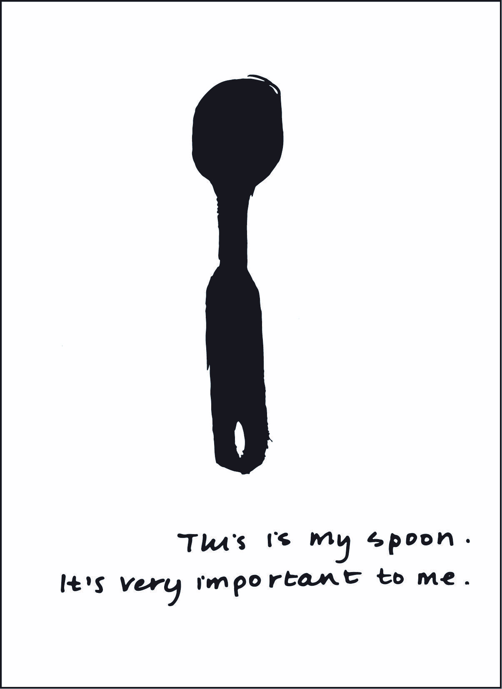
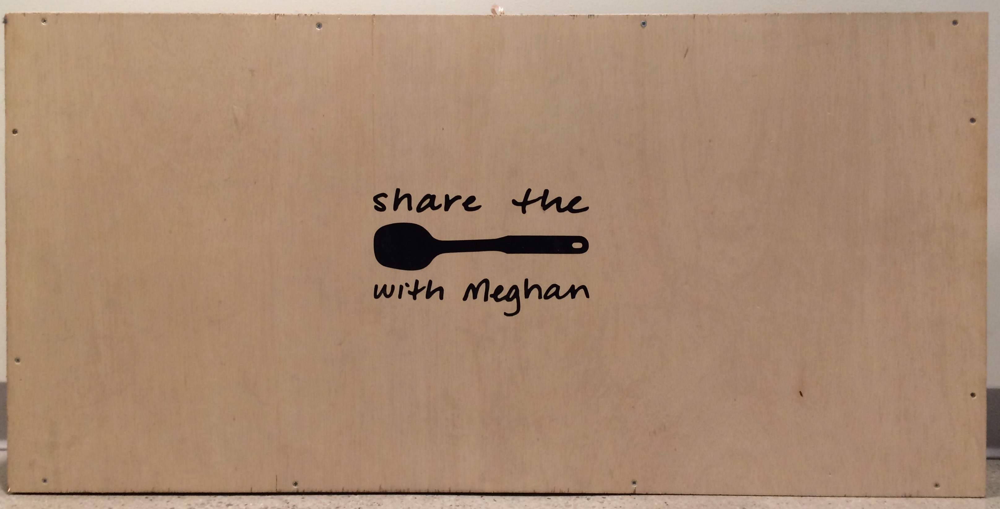
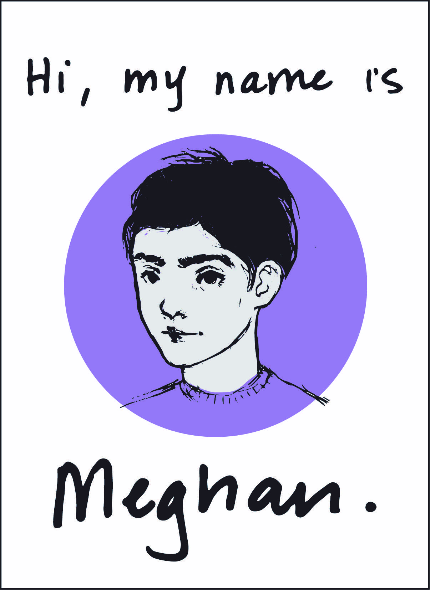
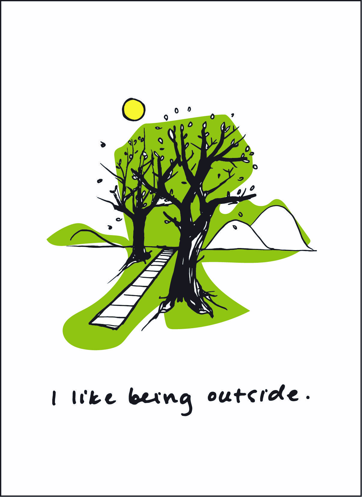
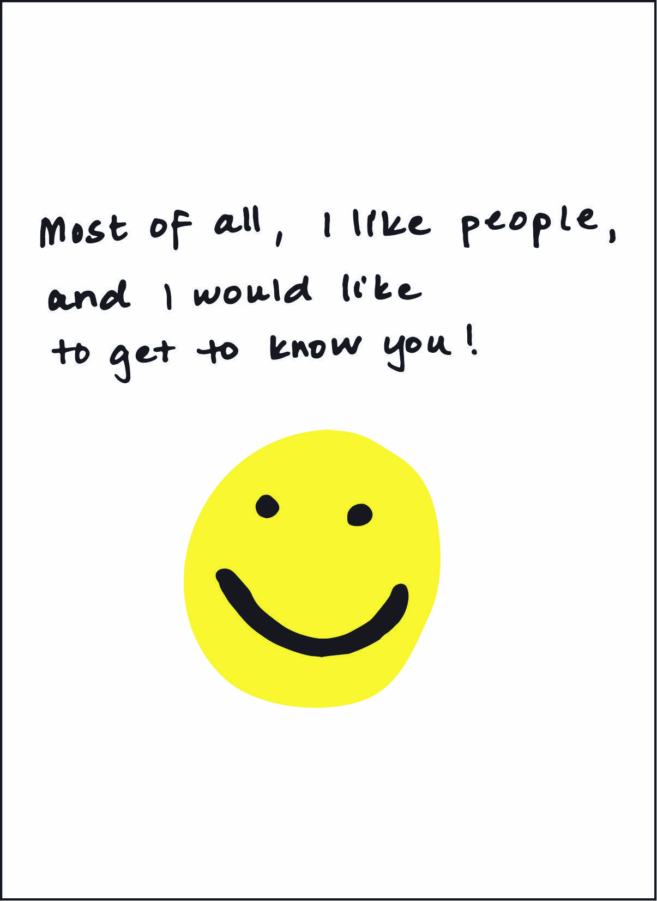

I'm a developer and designer based in Boston, MA.
Share a Spoon with Meghan
During the spring of 2016, I participated in a one day hackathon at MIT around accessibility. My team of five was paired with Meghan, a 26 year old woman with daily refractory epilepsy. Meghan was one of the sweetest people I have ever gotten to work with, and my team decided to design and create a positive experience for her that would allow for more people to be introduced to her and understand her story. Meghan really loved two things: music and a black spoon. She used this spoon to communicate her emotions to her parents, and she would occasionally give her spoon to other people to hold if she trusted them or felt comfortable with them. For our project, we created two things: a game that Meghan and a friend could play together to interact with each other in a way Meghan did not normally get the opportunity to do, and a storybook (another of Meghan’s favorites things) to introduce people to Meghan, her story, and how she experiences the world. The game was based around this act of sharing the Megan’s favorite spoon. We created a platform for Meghan and a friend to stand on that had bass-shakers underneath, and when Meghan handed her new friend her spoon, the music would turn on below them. When music was turned on, Meghan could not only hear it but actually feel the beat, which made her very happy. The interaction created trust and happiness between Meghan and her new friend, which was exactly our goal for the day. Since this project was so short, we ended up using Makey-Makeys instead of Arduinos to create the main experience and Adobe InDesign to create the storybook. Overall, we won 3rd place in the hackathon, but really it was Meghan who won all of our hearts.




